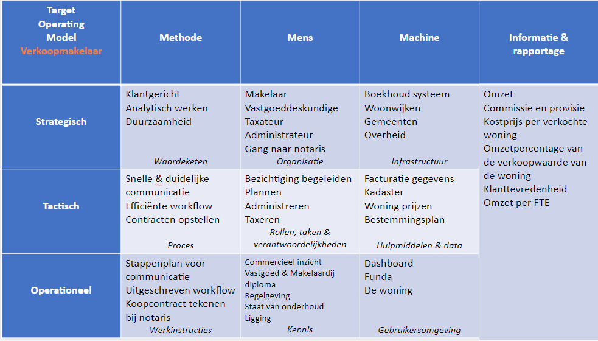
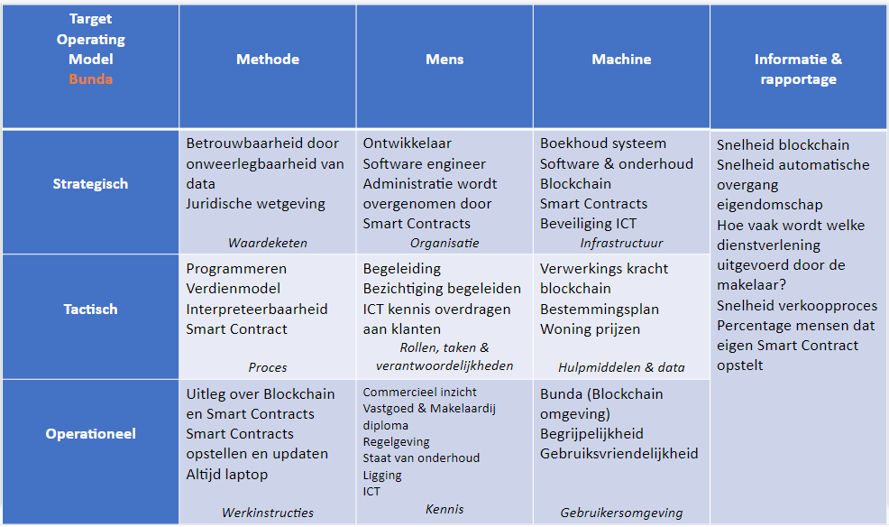

Het herontwerpen van een bedrijfsproces door toepassing van technologie heb ik samen met mijn projectgroep, bestaand uit Luuk van der Voort, Nick van Oostrum en mijzelf, uitgevoerd. Het herontwerp bedrijfsprocessen bestaat uit de volgende stukken:
Bedrijfsproces verkoopmakelaar
Tijdens ons project hebben wij veel geleerd over Smart Contracts binnen een blockchain omgeving. Wij denken dat Smart Contracts de komende jaren steeds belangrijker worden en steeds vaker
voor gaan komen. Om te laten zien dat Smart Contracts heel veelzijdig ingezet kunnen worden zullen wij het bedrijfsproces van een verkoopmakelaar onder de loep nemen. We zullen eerst ingaan
op het huidige proces en daarna het proces veranderen m.b.v. Smart Contracts en een blockchain-omgeving. Als laatste sluiten wij af met de implicaties van het herontwerp voor de methode,
de mens en de machine binnen een makelaarsorganisatie.
Vooronderzoek
Een makelaar doet vooronderzoek naar een woning. Zo bekijkt hij de gegevens in het Kadaster, onderzoekt voor welke prijs gelijkwaardige huizen
verkocht zijn en bekijkt bijzonderheden in het bestemmingsplan. Wanneer de makelaar de woning bekijkt let hij of zij ook op de ligging van de woning en de
staat van het onderhoud.
Inventarisatie en vaststellen verkoopprijs
Daarna zal een makelaar de wensen van de verkoper vaststellen. Wil de persoon snel van zijn woning af of heeft de persoon de tijd en kan de prijs
daarom iets hoger? De vraagprijs wordt samen met de verkoper vastgesteld.
Bepaling dienstverlening en kosten
Wanneer er gekozen wordt om met de makelaar in zee te gaan, dan stelt hij of zij de opdracht op voor zijn bemiddeling in de
verkoop. Hierbij wordt ingegaan bij welke condities de verkoop kan plaatsvinden, of de makelaar een vaste prijs krijgt of op basis van een
percentage van de verkoopprijs betaald wordt. Daarna wordt er bepaald welke diensten er onder de bemiddelingsprijs vallen, zijn een interieurspecialist en
goede foto’s inbegrepen of niet? Wordt een woning op Funda of op social media geplaatst? Wie maakt de omschrijving en wie regelt de bezichtigingen?
Contact met potentiële kopers
Wanneer potentiële kopers interesse hebben in een woning onderhoudt de verkoopmakelaar het contact. De makelaar regelt en begeleidt
vaak de bezichtigingen. De makelaar verzamelt de biedingen en legt deze voor aan de verkoper.
Opstellen koopcontract
Als er een akkoord over een eindbod is, stelt de verkoopmakelaar het koopcontract op. Hierin wordt meestal een termijn
opgenomen waarin “voorbehoud van financiering” geldt.
Koopcontract tekenen bij de notaris
Het proces van de verkoopmakelaar eindigt bij de gang naar de notaris voor het tekenen van het koopcontract en de overdracht van eigendomschap.
Smart Contracts en blockchain
Om een duidelijk beeld te schetsen van de mogelijkheden van Smart Contracts en een blockchain zullen wij eerst wat meer uitleg geven over deze onderwerpen.
Voordat bedrijven of mensen met elkaar zaken kunnen doen, moeten ze gemeenschappelijke contracten definiëren die algemene termen, gegevens, regels, concept
definities en processen omvatten (Hyperledger Fabric, 2020). Samen vormen deze contracten het bedrijfsmodel dat alle interacties tussen de partijen bij de transactie regelt.
Een Smart Contract is een digitaal contract, dat de regels tussen verschillende organisaties of partijen definieert in uitvoerbare code.
Om deze Smart Contracts om te zetten in uitvoerbare programma’s is een blockchain-netwerk nodig. Een Smart Contract kan vervolgens de regels voor elk type bedrijfsobject implementeren, zodat deze automatisch worden afgedwongen wanneer het Smart Contract wordt uitgevoerd. M.b.t. tot het proces van huizen kopen, kan een Smart Contract bijvoorbeeld automatisch een geldtransactie laten uitvoeren wanneer de termijn voor voorbehoud van financiering verstreken is. Ook kan een Smart Contract bij een verkocht huis het eigendomschap veranderen van verkoper Mariëlle naar koper Hubèrt.
Het belangrijkste van een Smart Contract is dat de uitvoering van taken efficiënter gaat dan bij een handmatig menselijk bedrijfsproces. In ons herontwerp staan de woning, het eigendomschap en andere zaken in een blockchain. Ons herontwerp hebben wij de term Bunda, Blockchain Funda, gegeven. In de tabel 1 wordt beschreven hoe het proces verandert. Daarna volgt per onderdeel een toelichting over de verandering.
Tabel 1
Verandering proces
Vooronderzoek via blockchain
Waar de makelaar voorheen op zoek ging naar gegevens over woningen in het Kadaster is deze informatie nu in de blockchain te vinden.
Informatie over de woning, foto’s van de woning, prijzen van eerder verkochte huizen en bijzonderheden in het bestemmingsplan zijn allemaal geüpload in de blockchain.
Het vooronderzoek m.b.v. de blockchain kan uitgevoerd worden door de makelaar of een koper zelf.
Hulp bij opstellen Smart Contract
Wanneer een eigenaar zijn woning wilt verkopen, kan hij dit m.b.v. een Smart Contract aangeven in de blockchain. De eigenaar kiest alleen of in met de hulp van een
makelaar de gewenste verkoopprijs en andere randvoorwaarden voor de verkoop van de woning. Wanneer de eigenaar te weinig kennis of kunde heeft om een Smart Contract op te stellen kan
hij daar ook de hulp van een makelaar voor gebruiken.
Mogelijkheid tot dienstverlening
De dienstverlening die een makelaar kan bieden verandert deels door de invoering van Bunda. Een makelaar zal kunnen helpen bij het opstellen van een Smart Contract.
Daarnaast kan een makelaar nog steeds ingezet worden om foto’s te maken van de woning of een interieurspecialist in te schakelen. De informatie van de woning wordt niet meer op Funda gezet,
maar zal geüpload worden naar Bunda.
Begeleiding bij bezichtiging
Uiteraard zullen bezichtigingen nog steeds blijven bestaan voor een goed werkend proces. De makelaar regelt en begeleidt nog steeds vaak de bezichtigingen.
Hulp bij aanpassen Smart Contract
Wanneer een potentiële koper gelijk akkoord gaat met het Smart Contract waarin de prijs en de randvoorwaarden staan, zal het proces gelijk
doorgaan naar de laatste stap. Wanneer de potentiële koper echter andere wensen heeft, zal de makelaar gebruikt worden om het Smart Contract aan te passen.
Vanaf dit moment dient de verkoper opnieuw akkoord te gaan met het Smart Contract, omdat deze gewijzigd is van originele staat.
Smart Contract regelt afhandeling (ver)koop
Wanneer een koper akkoord gaat met de prijs, de randvoorwaarden en eigen wensen in een Smart Contract en de verkoper ook zal het
Smart Contract de transactie regelen en het eigendomschap overhevelen naar de koper. Vanaf dat moment staat het huis op naam van de koper en heeft
de verkoper zijn geld ontvangen. Het eigendomschap wordt automatisch doorgevoerd zonder tussenkomst van een notaris.
Door dit hernieuwde proces veranderen er een aantal zaken. Particulieren hebben meer invloed en handelen directer met elkaar. Makelaars nemen een meer begeleidende rol aan. De rol van de notaris vervalt. Door het vervallen van de notaris en het directe handelen van particulieren nemen de kosten voor de kopende partij af.
Implicaties van het herontwerp
Door de beoogde verandering van het bedrijfsproces van een makelaar veranderen er behoorlijk wat zaken m.b.t. de methode, mens en machine.
Om deze veranderingen duidelijk weer te geven zullen wij het Target Operating Model, ofwel TOM, gebruiken. Met een TOM beschrijf je de bedrijfsvisie van een organisatie
waarbij operationele en strategische doelstellingen op elkaar afgestemd worden (Capstera, z.d.). Hierbij worden de bedrijfscapaciteiten, de interne factoren en externe factoren,
de organisatorische structuur, technologie en informatiebronnen van een organisatie beschreven. Het uitgangspunt binnen dit model is dat een organisatie bestaat uit een samenwerking van Mens,
Machine en Methode. Deze samenwerking dekt de drie lagen van bedrijfsstrategie, tactische aansturing en operationele uitvoering. Voor een optimale operationele werking bewegen de negen domein flexibel
en in harmonie met elkaar.
Voor het bedrijfsproces van een makelaarsorganisatie zullen wij het huidige Operating Model opstellen en een Target Operating Model opstellen die de implicatie van Bunda omvat.

Figuur 1. Huidige Target Operating Model.

Figuur 2. Target Operating Model na Bunda.
Literatuurlijst
Capstera. (z.d.). Target operating model. Geraadpleegd op 19 oktober 2020, van https://www.capstera.com/target-operating-model/
Funda. (2020, 16 juni). Wat doet een verkoopmakelaar? Geraadpleegd op 18 oktober 2020, van https://www.funda.nl/meer-weten/wat-doet-een-verkoopmakelaar/
Hyperledger Fabric. (2020). Smart Contracts and Chaincode. Geraadpleegd op 18 oktober 2020, van https://hyperledger-fabric.readthedocs.io/en/release-2.2/smartcontract/smartcontract.html